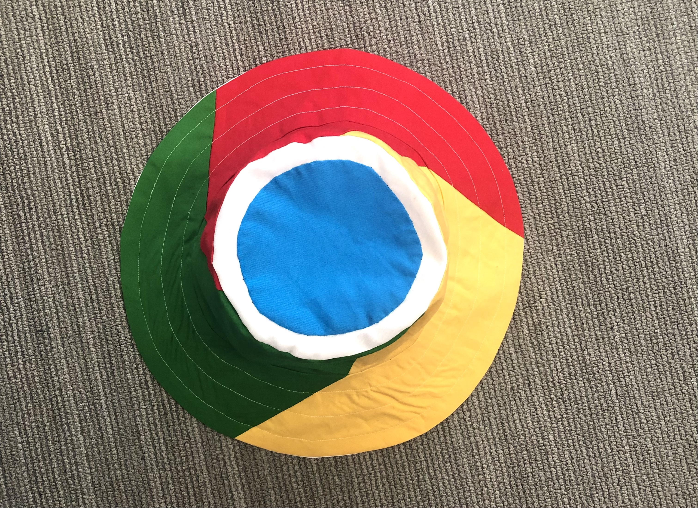
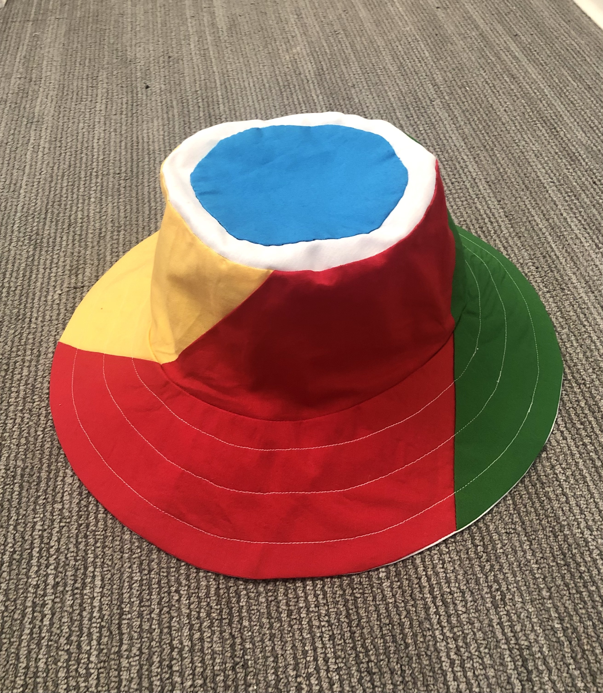
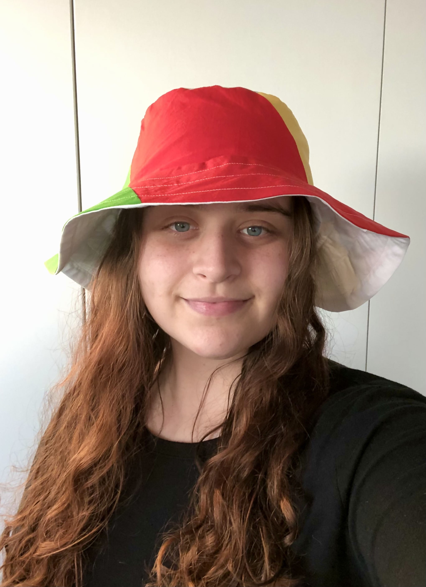

Chrome Bucket Hat Pattern



This is basically the Mood Sewceity bucket hat with a few modifications listed below
Modifications I made:
- Three side panel and brim pieces instead of 2
- Fully lined
- Appliquéd circle on the top
- I basically ignored the top stitching parts of the pattern you can do the top stitching if you want
Things I would do differently if I made the hat again:
- Made a smaller size
- Made the brim a little thinner so it wouldn’t be as floppy
- Added interfacing to the lining of the brim for extra stiffness
- Used a better quality lining so it wouldn’t be so see-through on the inside
Make the lining use the mood pattern size F pattern pieces
Cut out 1 crown piece, 2 side panels, and 2 brim pieces
Follow the mood pattern with the modifications below. Essentially you are pretending that you are making a full hat with the lining material.
Step 1:
Just do this for the lining brim pieces (I didn’t topstitch)
Step 2:
Skip entirely
Step 3:
xactly what mood pattern says
Step 4:
Basically what the mood pattern says but I needed to cut some small notches into the side panels to get the pieces to work
Step 5:
Basically what the mood pattern says, just treat the right side of your lining as the right side of the lining
Step 6:
Skip for now


Making the outside:
Cut out 1 crown piece out of white, one crown piece out of blue (you can make it a bit smaller but ir doesn’t really matter too much), cut out three of the modified side panel pieces, and 3 of the modified brim pieces (the side panel pieces and brim pieces should be the red, yellow, and green ofc)
Basically follow the mood instructions through step 5 as described above while keeping the following things in mind:
- Make sure your pieces are sewn together in the right order (the long side of the red goes to the short side of the yellow, the long side of the yellow goes to the short side of the green….), this is more important for the brim pieces
- Make sure the direction of the pieces (make sure your seam allowances are on the inside of the project)
- When sewing the three brim or side panel pieces together you can’t just line up the edges and stitch, shift the pieces so that 1/2 inch from the straight edge of the fabric the curved edges meet up, basically when you are sewing your seams you want to be sewing through both pieces of fabric. This means that you will have little triangles of each piece that stick out (cut them off after you sew the sides together)
- Don’t forget to fuse your interfacing to the chrome colored brim pieces!
- On step 5 make sure that your diagonals line up. I did that by marking the diagonal where it was 1/2 inch away from the bottom edge on both pieces and then matching up those marks when I pinned the pieces together.
After step 5 things are a little bit different:
- After step 5 appliqué the blue circle to the top of the hat with a 3/4 inch band of white between the blue and edge of the crown. I found that it helped to draw the circle on the white fabric with water soluble marker
- After step 5 with right sides together put the lining in the outer shell of the hat
- Do the first part of Step 2 (I also cut some notches in the seam allowance after I sewed the layers together)
- You should notice that there is no way to flip the hat so seam rip one of the straight seams on the lining on the side panels (I did some extra stitching at the edges of the area I wanted to seam rip so it wouldn’t unravel more)
- Flip the hat and push the lining into the hat and sew up the hole you used to flip the hat
- Do step 6 of the mood pattern (I didn’t do the grommet so idk how that would work with the lining)